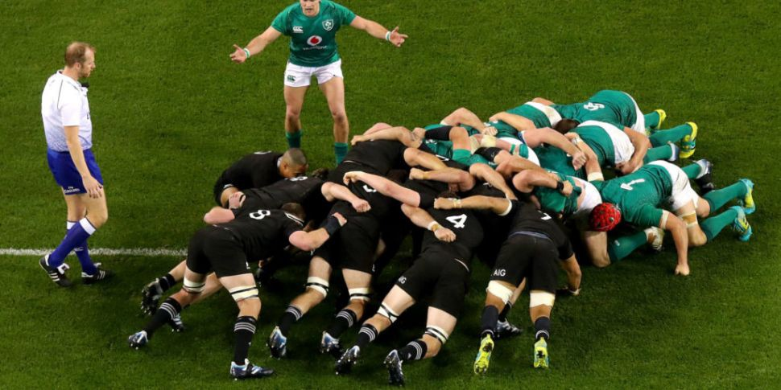

About Rugby
Rugby is a sport which is played all over the world. It is grulleing physically and all abut making tackles
Rules of the sport
- The ball is passed backwards
- Tackles must be below the shoulder
- Ball must be placed on the tryline to score
- Scrums are awarded to the opposing team if the ball goes forward from anything but a kick
Find out more at the link below
Teams playing
Teams play all over the world. There are different leagues including the English Premiership, Superrugby in Australia and New Zealand, The URC in Ireland, Scotland and Wales. Click the links to find out more.